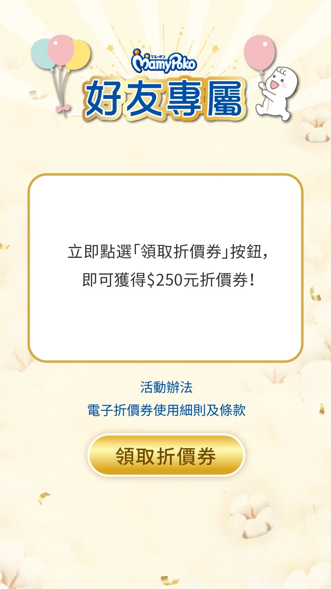
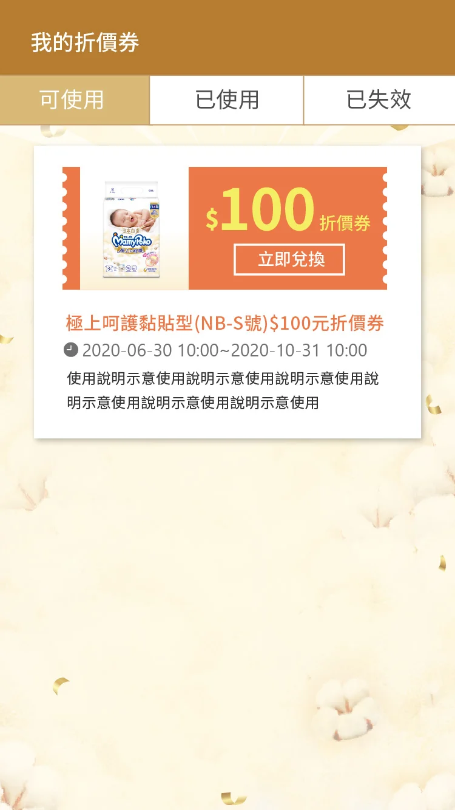
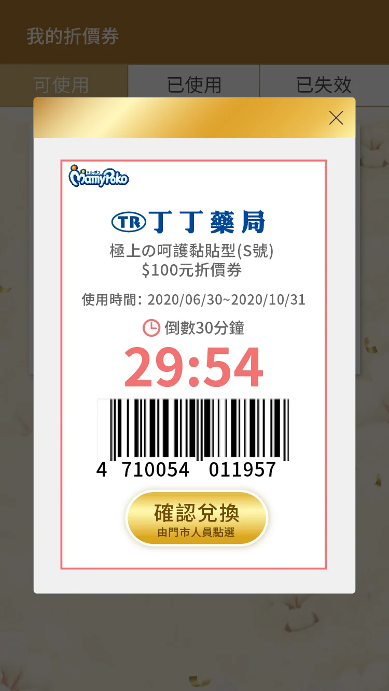
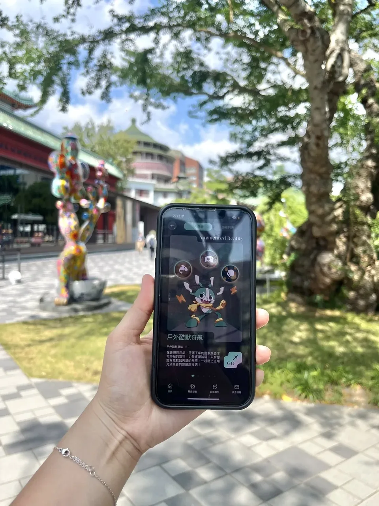
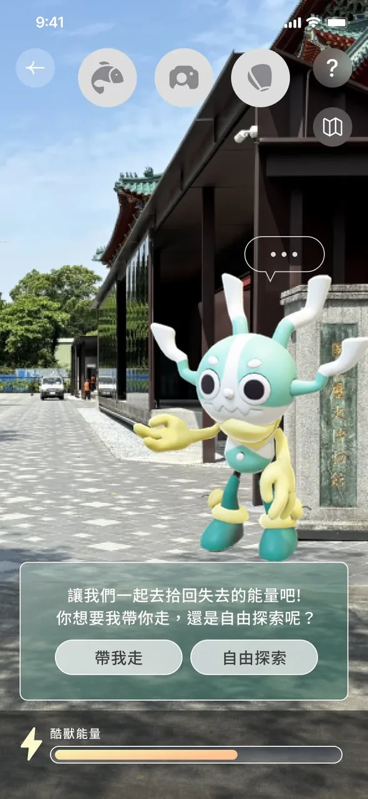
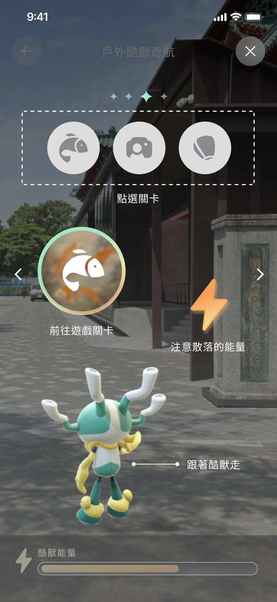
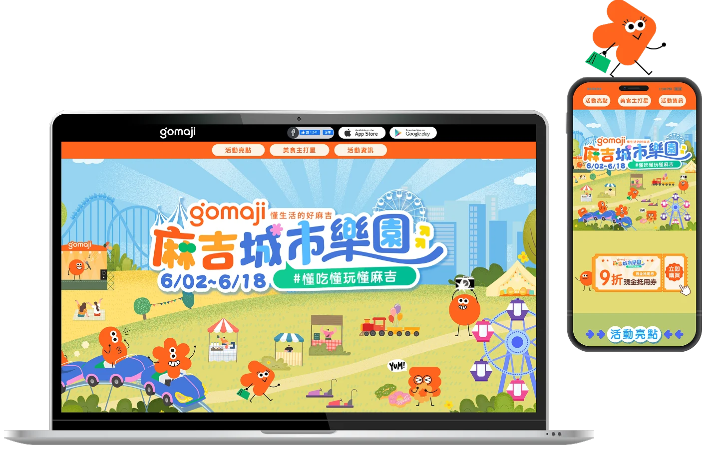
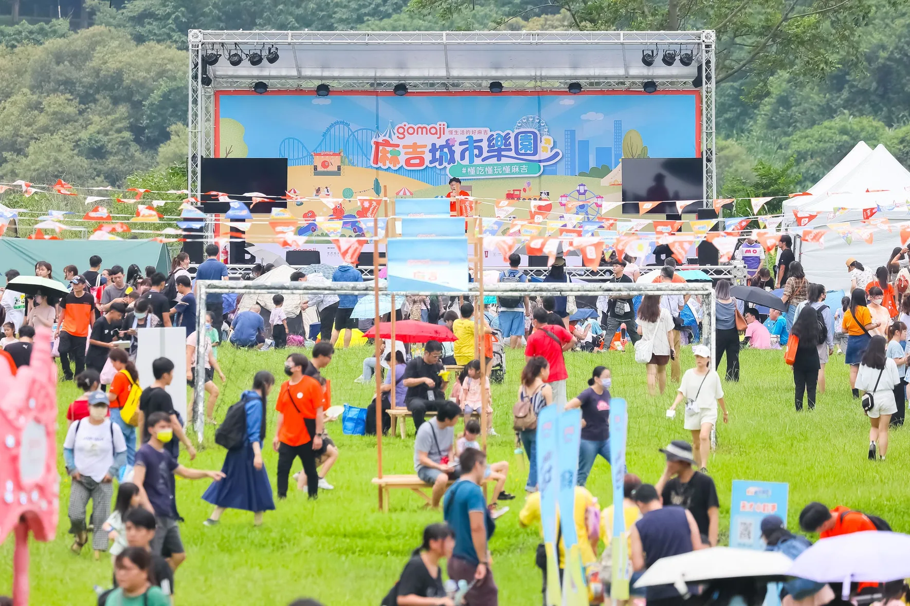
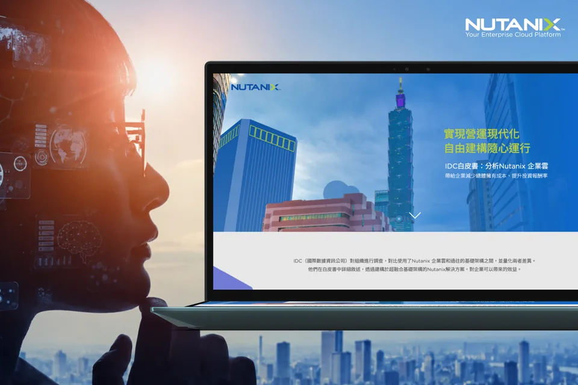
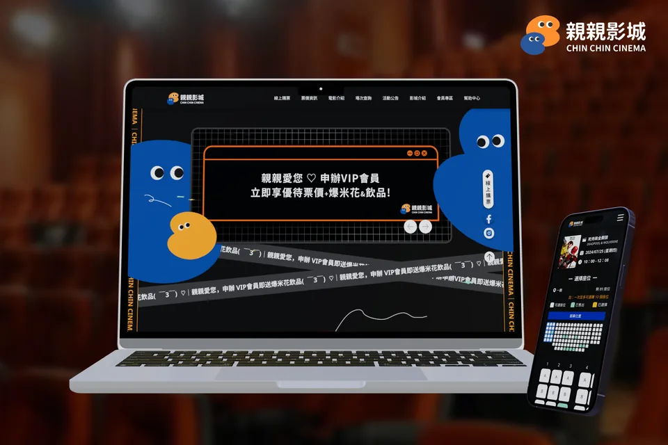

01 / 05
埔里酒廠｜智慧導覽系統
跨裝置、跨語言的園區導覽
為手機、桌機網頁與 43 吋 Kiosk 設計園區導覽，調整操作配置、地圖提示與四語文字的呈現規則。
查看案例：埔里酒廠智慧導覽系統


RoleUI/UX 設計跨裝置介面手繪導覽地圖
01 / 05
埔里酒廠｜智慧導覽系統
為手機、桌機網頁與 43 吋 Kiosk 設計園區導覽，調整操作配置、地圖提示與四語文字的呈現規則。
查看案例：埔里酒廠智慧導覽系統
RoleUI/UX 設計跨裝置介面手繪導覽地圖
02 / 05
嬌聯滿意寶寶｜LINE 優惠券前台
設計領券、門市與電商兌換畫面，與 CMS 設計師確認文字設定及前台呈現規則，並完成前台切版。
查看案例：嬌聯滿意寶寶 LINE 優惠券前台


Role前台 UI/UX介面規範前台切版
03 / 05
鴻海嘉年華｜App／Web 活動導覽
將工程圖整理為導覽地圖，依 App 與 Web 的螢幕空間與操作方式，配置搜尋、地點資訊與路線模擬功能。
查看案例：鴻海嘉年華活動導覽
RoleUI/UX 設計導覽地圖App／Web 介面
04 / 05
國立歷史博物館｜戶外 AR 探索
設計關卡入口、操作提示與完成狀態，並在現場確認後，調整文字對比、按鈕位置與大小，因應戶外相機畫面的變化。
查看案例：國立歷史博物館戶外 AR 探索


Role操作流程互動原型UI 設計
05 / 05
麻吉城市樂園｜活動主視覺與網站
以既有品牌元素設計活動主視覺，完成響應式網站切版與標題動效，並將主視覺應用於邀請卡、Banner、背板與旗幟。
查看案例：麻吉城市樂園活動主視覺與網站

Role活動主視覺網站 UI切版
網頁設計、前端切版與行銷視覺。
目前顯示第 1 張，共 5 張

網頁設計・前端切版
使用共用版型設計與切版系列課程網站，調整桌機與手機版面，並製作相關行銷素材。

前端切版・表單互動
完成 LINE LIFF 發票登錄介面切版，實作表單驗證與照片上傳預覽。

B2B 網頁設計・前端切版
依品牌識別與白皮書主題，完成活動頁視覺設計與切版。


在意畫面，也在意每一步操作。
我是謝孟庭 Helen，具 6 年以上視覺、網頁與 UI/UX 設計經驗。從行銷與電商網站起步，近年投入優惠券兌換、跨裝置導覽與博物館 AR 介面設計。
前端切版・表單互動
負責 LINE LIFF 前台切版，處理電子發票、紙本發票、雲端載具等多種登錄管道的介面與表單驗證邏輯，並實作發票照片上傳即時預覽功能。
可以操作的內容
此 Demo 可體驗表單操作、欄位驗證與照片預覽；送出後不會進行實際發票查核，也不會將資料儲存至後端資料庫。